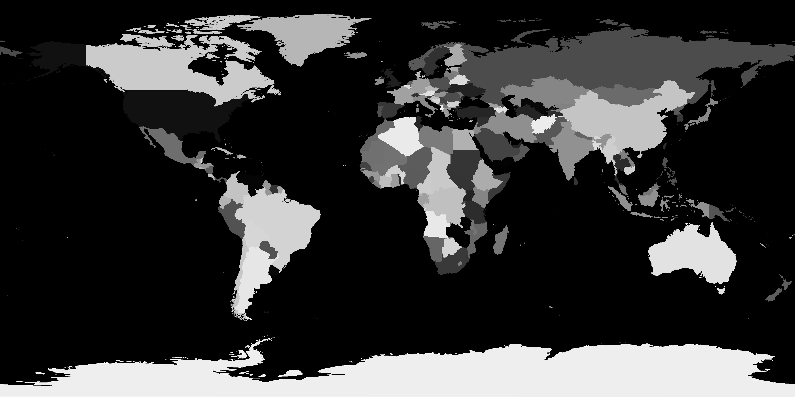

Globe
Use it to show where you are on a contact or about page. Visitors can drag it and zoom in as far as single countries.
Globe
Use the globe as a figure in a column of text. It fills the width of the column, and the wheel zooms it only after it has been clicked, so scrolling past it still scrolls the page.
What you need
globe.jsandglobe.css.data/world.pnganddata/world.json, the map, 93 KB together.fonts/, with IBM Plex Mono. Without it the globe uses the next monospace font in--font.- A web server, because the map is fetched.
The code
globe.js
// Each cell is shaded by the light on the sphere at its middle. Sea is
// the cell's background and land is drawn over it in quarter blocks.
// On the rim, the quarters inside the disc take the colour of whichever
// of the two covers more of them.
for (let j = 0; j < rows; j++) {
const row = top + j;
for (let i = 0; i < cols; i++) {
let inBits = 0, landBits = 0;
for (let q = 0; q < 4; q++) {
const x = ((i + (q & 1 ? 0.75 : 0.25)) * CW - v.cx) / v.R;
const y = (v.cy - (row + (q & 2 ? 0.75 : 0.25)) * LH) / v.R;
const rr = x * x + y * y;
if (rr > 1) continue;
inBits |= 8 >> q;
if (!L) continue;
const z = Math.sqrt(1 - rr);
if (landAt(L, Math.asin(z * v.sin0 + y * v.cos0), v.lon0 + Math.atan2(x, z * v.cos0 - y * v.sin0)) >= 0.5) landBits |= 8 >> q;
}
if (!inBits) continue;
const mx = ((i + 0.5) * CW - v.cx) / v.R, my = (v.cy - (row + 0.5) * LH) / v.R;
const mz = Math.sqrt(Math.max(0, 1 - mx * mx - my * my));
const lit = Math.max(0, Math.min(1, (mx * LIGHT[0] + my * LIGHT[1] + mz * LIGHT[2] + 0.3) / 1.3));
const glint = Math.pow(Math.max(0, mx * GLINT[0] + my * GLINT[1] + mz * GLINT[2]), 40);
const dither = BAYER[(row & 3) * 4 + (i & 3)];
const land = "l" + Math.min(15, Math.floor(lit * 15 + dither));
const sea = "s" + Math.min(15, Math.floor(Math.min(1, lit * 0.85 + glint * 0.5) * 15 + dither));
// …
}
}Each character cell samples the sphere at four points, one in each quarter, and draws a quarter-block glyph for the quarters that fall on land. The light at the middle of the cell picks one of sixteen tones, and a 4 × 4 ordered dither blends the steps between them.
Add it to your page
-
Copy
globe.js,globe.cssand thedata/andfonts/folders next to your page. -
Load them in the head.
<link rel="stylesheet" href="globe.css"> <script defer src="globe.js"></script> -
Put the globe and its zoom buttons where it should appear.
<figure class="fig globe-fig"> <pre class="plot" data-figure="globe" data-world="data/world" aria-hidden="true"></pre> <div class="seg globe-zoom" role="group" aria-label="Globe"> <button type="button" class="btn" data-globe="in" aria-label="Zoom in">+</button> <button type="button" class="btn" data-globe="out" aria-label="Zoom out">-</button> <button type="button" class="btn" data-globe="home" aria-label="Show Jablonec nad Nisou">JBC</button> </div> </figure> -
Open the page from a web server, for example
python3 -m http.serverin its folder.
Marked place
Mark your own town or office on the globe. The marker blinks, and the third button flies the globe to it.
The code
globe.js
// The wheel, a pinch, a double click or the buttons zoom in as far as single
// countries. Home has a short label for when the globe is zoomed out and its
// full name for when it is zoomed in.
const HOME = { lat: 50.7243, lon: 15.1711, name: "Jablonec nad Nisou", short: "JBC" };
const D = Math.PI / 180;
const ZMAX = 40;
const HOME_ZOOM = 14;
const SPIN = 0.18;name labels the marker at a zoom of 8 or more, and short labels it below that. The third button flies to the place and stops at a zoom of HOME_ZOOM.
Add it to your page
-
Put your place in
HOMEnear the top of the globe section inglobe.js. Latitude is negative south of the equator, and longitude is negative west of Greenwich.const HOME = { lat: 51.5072, lon: -0.1276, name: "London", short: "LON" }; -
Change the label and the
aria-labelof the third button to match.<button type="button" class="btn" data-globe="home" aria-label="Show London">LON</button>
Map data
Use the map files as they are, or rebuild them from Natural Earth for a different resolution or a newer edition of the borders.

What you need
- Node.js, to run the build.
ne_50m_admin_0_countries.geojsonfrom Natural Earth, which is in the public domain.
The code
globe.js
// The map is a grey PNG in which each pixel holds a country index, 0 for
// sea. Its last row is a ramp from 0 to 255 that maps whatever the browser
// decoded back to the stored values. Land is kept at four sizes so a sample
// can read the one that matches its footprint on the globe. `base` is the
// path of the two files without their extension.
function loadWorld(base, done) {
// …
ctx.drawImage(img, 0, 0);
const px = ctx.getImageData(0, 0, w, h + 1).data;
canvas.width = canvas.height = 0;
const lut = new Uint8Array(256);
for (let x = 0; x < w; x++) lut[px[(h * w + x) * 4]] = Math.floor((x * 256) / w);
const idx = new Uint8Array(w * h);
const land = new Uint8Array(w * h);
for (let i = 0; i < w * h; i++) {
idx[i] = lut[px[i * 4]];
land[i] = idx[i] ? 255 : 0;
}
const countries = meta.countries;Each pixel of world.png holds a country's index, with 0 for sea, and world.json lists each country's ISO code, label position and size. The last row of the image is a ramp from 0 to 255, which the globe uses to undo any colour correction the browser applied while decoding it.
Add it to your page
-
Download
ne_50m_admin_0_countries.geojsonfrom the natural-earth-vector repository. -
Run the build from the
globefolder. A third argument sets the width of the map in pixels, which is 3600 by default.node tools/build-world.js ne_50m_admin_0_countries.geojson data -
If the map files live somewhere else, set
data-worldto their path without the extension.<pre class="plot" data-figure="globe" data-world="assets/world" aria-hidden="true"></pre>
Language
Show the country names and the coordinates in your page's language. The globe has English and Czech, and other languages get the English names.
What you need
- A browser with
Intl.DisplayNames, which supplies the names. Without it the globe shows ISO codes.
The code
globe.js
function lang() {
return document.documentElement.lang === "cs" ? "cs" : "en";
}
// …
const regionNames = {};
function countryName(world, i) {
const c = world.countries[i - 1];
const l = lang();
if (!c[0]) return l === "cs" ? c[2] : c[1];
try {
if (!regionNames[l]) regionNames[l] = new Intl.DisplayNames([l], { type: "region" });
return regionNames[l].of(c[0]) || c[0];
} catch (e) {
return c[0];
}
}The globe reads the language from <html lang> every time it draws. The browser supplies each country's name from its ISO code, and the three places without a code have their names in world.json.
Add it to your page
-
Set the language on the page's
<html>element.<html lang="cs"> -
If the page switches language without reloading, change
langand send alangchangeevent ondocument.document.documentElement.lang = "cs"; document.dispatchEvent(new CustomEvent("langchange", { detail: "cs" }));
Colours
Match the globe to your page's colours, in a dark and a light version.
The code
globe.css
/* The globe shades its sea and land between the --sea-* and --land-* pairs.
Borders are cut out of the land in --bg, the colour behind the figure. */
:root {
/* … */
--fg: var(--ink);
--sea-lit: #2c2f37;
--sea-dark: #0b0c10;
--land-lit: #e4e1d9;
--land-dark: #44464d;
}
/* … */
:root[data-theme="light"] {
/* … */
--sea-lit: #fdfcf9;
--sea-dark: #bab6ad;
--land-lit: #8e8b84;
--land-dark: #2a2b2f;
color-scheme: light;
}
/* … */
.plot .sb { background: color-mix(in srgb, var(--sea-lit) var(--s), var(--sea-dark)); }
.plot .sf { color: color-mix(in srgb, var(--sea-lit) var(--s), var(--sea-dark)); }
.plot .lb { background: color-mix(in srgb, var(--land-lit) var(--l), var(--land-dark)); }
.plot .lf { color: color-mix(in srgb, var(--land-lit) var(--l), var(--land-dark)); }Each cell mixes a lit colour and a shadow colour in the proportion its shading class sets. Borders and label backgrounds take --bg, the marker takes --accent, and the grid takes --fg.
Add it to your page
-
Change the
--sea-*and--land-*pairs and the other colours at the top ofglobe.css. They are set on:root, so they apply to the whole page. -
For the light colours, set
data-theme="light"on the<html>element.<html lang="en" data-theme="light">